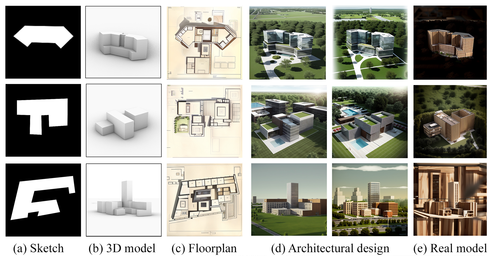
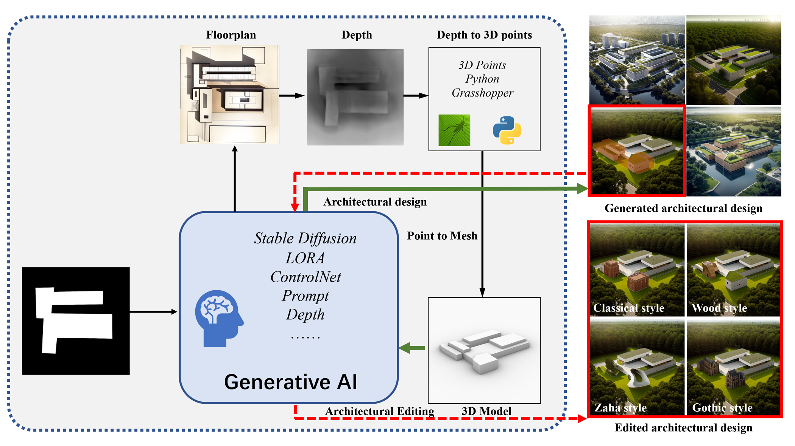
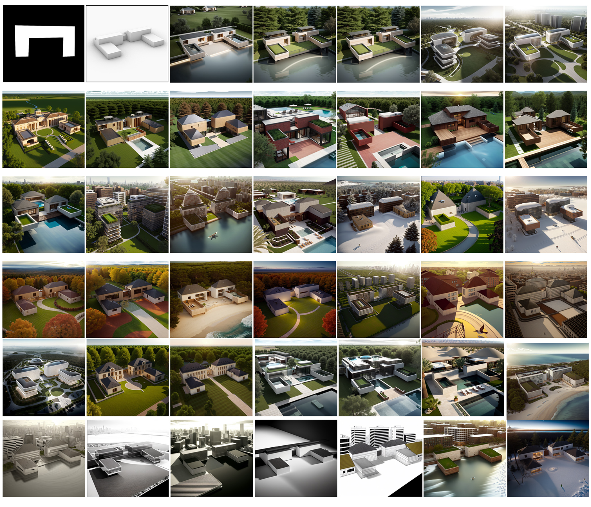
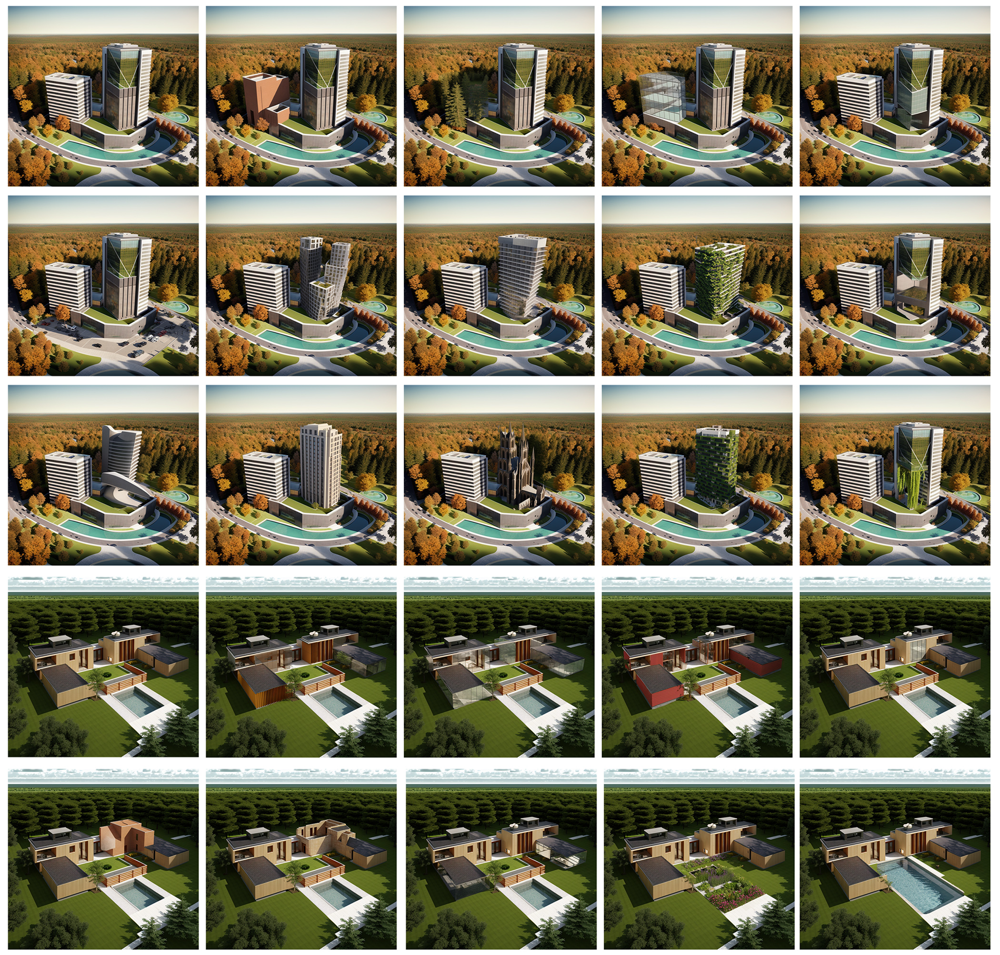

Recently, the development of large-scale models has paved the way for various interdisciplinary research, including architecture. By using generative AI, we present a novel workflow that utilizes AI models to generate conceptual floorplans and 3D models from simple sketches, enabling rapid ideation and controlled generation of architectural renderings based on textual descriptions. Our work demonstrates the potential of generative AI in the architectural design process, pointing towards a new direction of computer-aided architectural design.
In this paper, as shown in Figure 1, we present a comprehensive workflow for the preliminary stages of architectural design that has not been explored previously. We explore how generative AI technology can be effectively utilized in the early phases of architectural design to generate conceptual plans and 3D models based on initial sketches. By leveraging this information, we can rapidly conceive and develop creative ideas. Additionally, we employ text-to-image generation techniques to achieve controlled generation and editing of architectural rendering images. Throughout our entire system, we can generate a range of visual cues, including architectural plans, elevations, handcrafted model, and architectural renderings, which serves as a wealth of inspiration and provide architects with many creative prompts. Our approach significantly reduces the time required for the initial stages of architectural design while offering boundless possibilities for designers' creativity. 
Firstly, we generate floorplans and architectural 3D models based on the sketches. Then, we employ the generated architectural models to achieve the end-to-end generation of architectural renderings. This process is controlled by fine-tuned models and textual descriptions, allowing us to integrate various design requirements and obtain the desired preliminary architectural design results. Figure 5 illustrates the overall generated results. The textual descriptions are composed using the architectural design elements in Figure 3 (Architectural styles, types, materials, landscape, renderings..).
we utilize masks to modify specific regions of the generated building, such as material editing, element modifications, and structural changes. Our approach is close to the parametric design. However, instead of using numerical parameters, we employ text prompts as variables and leverage the powerful generative capabilities of large-scale models to perform specific editing operations, providing real-time feedback to architects. As shown in Figure 6, we extensively explore local architectural design edits based on the architectural terms discussed earlier. Our approach allows desired modifications to specific elements while preserving the rest of the architectural rendering unchanged.
Refer to the pdf paper linked above for more details on qualitative, quantitative, and ablation studies.
@inproceedings {li2023sketch,
title={Sketch-to-Architecture: Generative AI-aided Architectural Design},
booktitle={Proceedings of the 31st Pacific Conference on Computer Graphics and Applications},
author={Li, Pengzhi and Li, Baijuan and Li, Zhiheng},
year={2023},
publisher={The Eurographics Association}
}